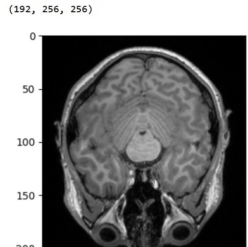

Data Exploration#
As I have to keep up the privacy I cannot show images, therefore I will not provide a juypterbook and present my outputs here.
For looking at a data set, Nilearn is a tool one can use for analyses of brain volumes. It provides statistical and machine-learning tools and an instructive documentation.
Overview#
Structure
First, we want to get an overview of the data in the BIDS data set. Therefore we use the module bidsand set the path to the data set.
import bids
import os
path = "Nifti"
layout = bids.BIDSLayout(path)
print(layout)
This will give some information on the amount of subjects, sessions and runs of the data set. Next we can look at what task were done.
BIDS Layout: .../mnt/d/Data/Nifti | Subjects: 29 | Sessions: 0 | Runs: 116
The data set originally has 30 subjects. In the paper 6 subjects where excluded, but there is no documenation on which. I excluded 03 as something was off with the data.
tasks = layout.get_tasks()
print(tasks)
[rest]
In the case of this data set, there is only one task but 4 conditions (ADA, ALT, ALT-II, EV). Further the data set contains functional and anatomical images and after conversion also in Nifit file format.
Entities Next we can look at the entities that can be detected. The following code will provide huge list of parameters.
layout_entities = layout.get_entities()
layout_entities.keys()
dict_keys(['subject', 'session', 'sample', 'task', 'acquisition', 'ceagent', 'staining', 'tracer', 'reconstruction', 'direction', 'run', 'proc', 'modality', 'echo', 'flip', 'inv', 'mt', 'part', 'recording', 'space', 'chunk', 'suffix', 'scans', 'fmap', 'datatype', 'extension', 'participant_id', 'age', 'sex', 'group', 'AcquisitionMatrixPE', 'AcquisitionNumber', 'AcquisitionTime', 'BaseResolution', 'BodyPartExamined', 'CoilCombinationMethod', 'ConsistencyInfo', 'ConversionSoftware', 'ConversionSoftwareVersion', 'DeviceSerialNumber', 'DwellTime', 'EchoTime', 'FlipAngle', 'HeudiconvVersion', 'ImageOrientationPatientDICOM', 'ImageOrientationText', 'ImageType', 'ImagingFrequency', 'InPlanePhaseEncodingDirectionDICOM', 'InstitutionAddress', 'InstitutionName', 'InstitutionalDepartmentName', 'InversionTime', 'MRAcquisitionType', 'MagneticFieldStrength', 'Manufacturer', 'ManufacturersModelName', 'MatrixCoilMode', 'Modality', 'NonlinearGradientCorrection', 'ParallelReductionFactorInPlane', 'PartialFourier', 'PatientPosition', 'PercentPhaseFOV', 'PercentSampling', 'PhaseEncodingSteps', 'PhaseResolution', 'PixelBandwidth', 'ProcedureStepDescription', 'ProtocolName', 'PulseSequenceDetails', 'ReceiveCoilActiveElements', 'ReceiveCoilName', 'ReconMatrixPE', 'RefLinesPE', 'RepetitionTime', 'SAR', 'ScanOptions', 'ScanningSequence', 'SequenceName', 'SequenceVariant', 'SeriesDescription', 'SeriesNumber', 'ShimSetting', 'SliceThickness', 'SoftwareVersions', 'SpoilingState', 'StationName', 'TxRefAmp', 'BandwidthPerPixelPhaseEncode', 'CogAtlasID', 'DerivedVendorReportedEchoSpacing', 'EchoTrainLength', 'EffectiveEchoSpacing', 'PhaseEncodingDirection', 'SpacingBetweenSlices', 'TaskName', 'TotalReadoutTime', 'SliceTiming', 'filename', 'acq_time', 'operator', 'randstr'])
General report
from bids.reports import BIDSReport
report = BIDSReport(layout);
counter = report.generate()
Number of patterns detected: 11
Remember to double-check everything and to replace <deg> with a degree symbol.
general_report = counter.most_common()[0][0]
print(general_report)
This will present an report on scanning process and the conversion of the files.
In session None, MR data were acquired using a 3-Tesla Siemens Prisma_fit MRI scanner.
One run of T1-weighted SK\SP\MP GR\IR (GR\IR) single-echo structural MRI data were collected (256 slices; repetition time, TR=2300ms; echo time, TE=3.03ms; flip angle, FA=9<deg>; field of view, FOV=192x256mm; matrix size=192x256; voxel size=1x1x1mm).
Four runs of rest segmented k-space echo planar (EP) single-echo fMRI data were collected (35 slices in interleaved ascending order; repetition time, TR=2000ms; echo time, TE=30ms; flip angle, FA=90<deg>; field of view, FOV=192x192mm; matrix size=64x64; voxel size=3x3x3mm; in-plane acceleration factor=2). Run duration was 10:44-10:48 minutes, during which 322-324 volumes were acquired.
Dicoms were converted to NIfTI-1 format using dcm2niix (v1.0.20220720). This section was (in part) generated automatically using pybids (0.15.6).
Anatomical exploration#
First we want to plot images.
from nilearn import plotting
import pylab as plt
import numpy as np
import nibabel as nb
%matplotlib inline
#loading an image
img = nb.load('/mnt/d/Data/Nifti/sub-01/anat/sub-01_T1w.nii.gz')
#getting a picture
data = img.get_data()
plt.imshow(data[:, :, data.shape[2] // 2].T, cmap='Greys_r')
print(data.shape)
This will result in an anatomical image. Here you see a screeshot of the image, as I needed to keep the privacy of the participatns.

print(img)
This will provide us with als informations of the image like meta-data, ata shape, dimensions, affine.
<class 'nibabel.nifti1.Nifti1Image'>
data shape (192, 256, 256)
affine:
[[ 9.92133796e-01 1.23001680e-01 2.32108962e-02 -1.13634888e+02]
[-1.25154376e-01 9.71644998e-01 2.00605050e-01 -1.02728943e+02]
[ 2.12200475e-03 -2.01932237e-01 9.79397178e-01 -1.23660866e+02]
[ 0.00000000e+00 0.00000000e+00 0.00000000e+00 1.00000000e+00]]
metadata:
<class 'nibabel.nifti1.Nifti1Header'> object, endian='<'
sizeof_hdr : 348
data_type : b''
db_name : b''
extents : 0
session_error : 0
regular : b'r'
dim_info : 54
dim : [ 3 192 256 256 1 1 1 1]
intent_p1 : 0.0
intent_p2 : 0.0
intent_p3 : 0.0
intent_code : none
datatype : int16
bitpix : 16
slice_start : 0
pixdim : [1. 1. 1. 1. 2.3 0. 0. 0. ]
vox_offset : 0.0
scl_slope : nan
scl_inter : nan
slice_end : 0
slice_code : unknown
xyzt_units : 10
cal_max : 0.0
cal_min : 0.0
slice_duration : 0.0
toffset : 0.0
glmax : 0
glmin : 0
descrip : b'TE=3;Time=100151.645;phase=1'
aux_file : b''
qform_code : scanner
sform_code : scanner
quatern_b : -0.10135682
quatern_c : 0.005310074
quatern_d : -0.062484458
qoffset_x : -113.63489
qoffset_y : -102.72894
qoffset_z : -123.660866
srow_x : [ 9.9213380e-01 1.2300168e-01 2.3210896e-02 -1.1363489e+02]
srow_y : [ -0.12515438 0.971645 0.20060505 -102.72894 ]
srow_z : [ 2.12200475e-03 -2.01932237e-01 9.79397178e-01 -1.23660866e+02]
intent_name : b''
magic : b'n+1'
Functional Exploration#
For the functional file, one would start and look at the event.tsv, but I was not able to get the right information from the matlab files provided.
from pymatreader import read_mat
import pandas as pd
data = read_mat('/mnt/d/Data/Dicoms/sub-01/Trials/Trials_S01_1.mat')
data.keys()
dict_keys(['__header__', '__version__', '__globals__', 'Trials'])
mat= pd.DataFrame(data['Trials'])
mat
I recieve a pandas data fram with the following headings:
Sex
Condition
Task
img1
img2
img3
img4
img5
img6
img7
img8
ITI
jitterX
jitterY
No information on the structure of the trails.
So the exploration will be limted to the functional image.
func = nb.load('/mnt/d/Data/Nifti/sub-01/func/sub-01_task-rest_run-001_bold.nii.gz') #load image
print(func)
Similar all informations on the image are provided.
<class 'nibabel.nifti1.Nifti1Image'>
data shape (64, 64, 35, 323)
affine:
[[-2.97289515e+00 3.95612538e-01 -7.33844489e-02 7.86555252e+01]
[ 4.01258558e-01 2.87454200e+00 -7.58946180e-01 -7.03041916e+01]
[ 2.97673177e-02 7.61904538e-01 2.90148473e+00 -4.22993889e+01]
[ 0.00000000e+00 0.00000000e+00 0.00000000e+00 1.00000000e+00]]
metadata:
<class 'nibabel.nifti1.Nifti1Header'> object, endian='<'
sizeof_hdr : 348
data_type : b''
db_name : b''
extents : 0
session_error : 0
regular : b'r'
dim_info : 57
dim : [ 4 64 64 35 323 1 1 1]
intent_p1 : 0.0
intent_p2 : 0.0
intent_p3 : 0.0
intent_code : none
datatype : int16
bitpix : 16
slice_start : 0
pixdim : [-1. 3. 3. 3. 2. 0. 0. 0.]
vox_offset : 0.0
scl_slope : nan
scl_inter : nan
slice_end : 0
slice_code : alternating increasing
xyzt_units : 10
cal_max : 0.0
cal_min : 0.0
slice_duration : 0.0
toffset : 0.0
glmax : 0
glmin : 0
descrip : b'TE=30;Time=93836.678;phase=1'
aux_file : b''
qform_code : scanner
sform_code : scanner
quatern_b : 0.06711173
quatern_c : 0.9894831
quatern_d : 0.12808461
qoffset_x : 78.655525
qoffset_y : -70.30419
qoffset_z : -42.29939
srow_x : [-2.9728951e+00 3.9561254e-01 -7.3384449e-02 7.8655525e+01]
srow_y : [ 0.40125856 2.874542 -0.7589462 -70.30419 ]
srow_z : [ 2.9767318e-02 7.6190454e-01 2.9014847e+00 -4.2299389e+01]
intent_name : b''
magic : b'n+1'
data = func.get_fdata()
plt.imshow(data[:, :, data.shape[2] // 2, 0].T, cmap='Greys_r')
print(data.shape)
This will get us the functional image of run 1 from subject 01.